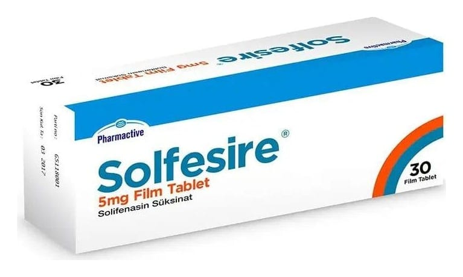

Solfesire 5 mg Film Kaplı Tablet, 30 Adet

Ne için kullanılır
KT · Bölüm 1SOLFESİRE idrar yollarındaki spazmı giderici (üriner antispazmotik) olarak bilinen bir ilaç grubuna dahildir.
Yuvarlak, bikonveks hafif sarı renkli film kaplı tablet. SOLFESİRE 30 ve 90 film kaplı tabletlik ambalajlarda kullanıma sunulmuştur.
SOLFESİRE tablet aşırı çalışan idrar torbası belirtilerinin tedavisinde kullanılmaktadır. Bu belirtiler arasında sık idrara çıkmak ihtiyacı, sıkışarak tuvalete gitme ihtiyacı, zamanında tuvalete yetişememenizden kaynaklanan idrar kaçırma bulunmaktadır.
Laktoz monohidrat inek sütü kaynaklıdır.